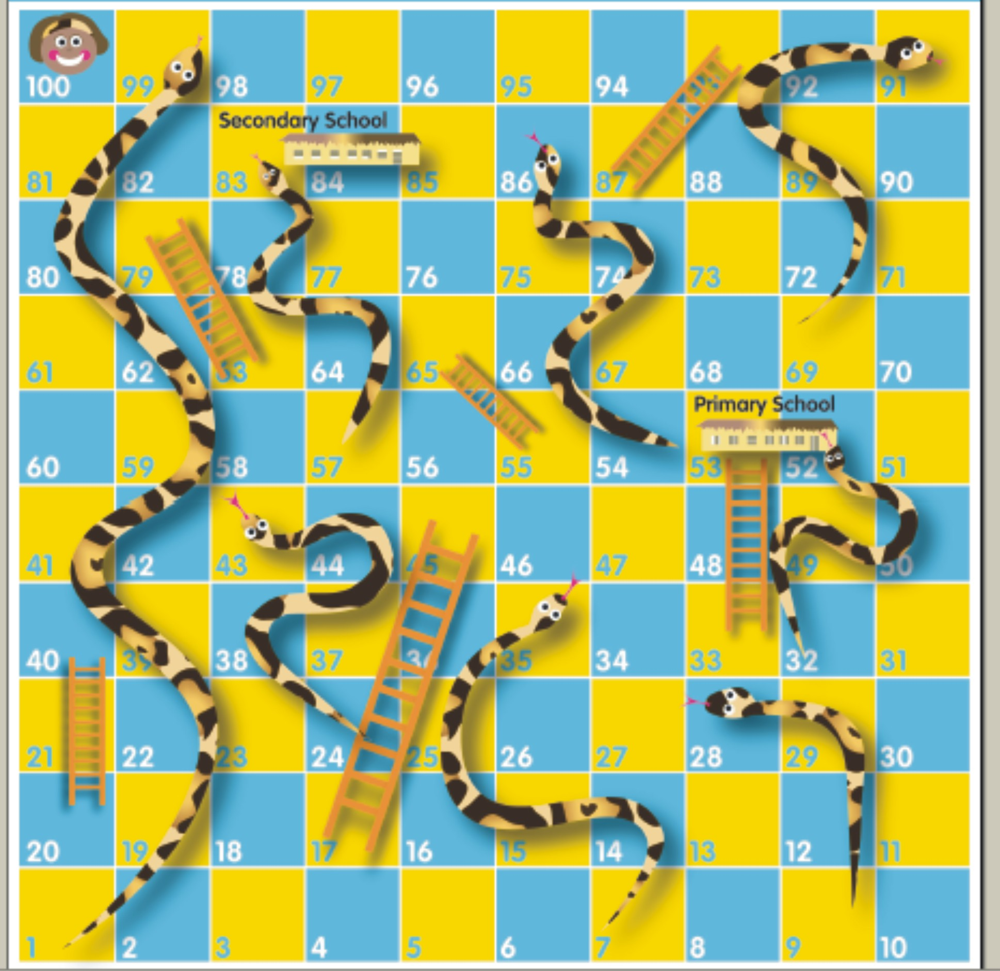
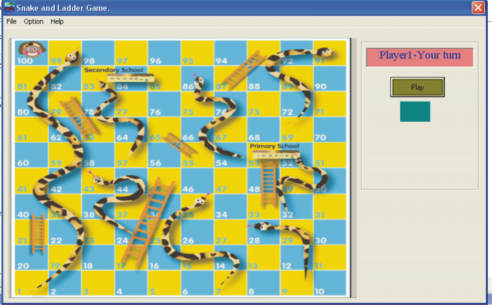

This game is an ancient game played and traced back to indian history.
It is a Game of snakes and ladders as the name is and is usually played as a game of luck. It also shows how life treat us all.
How To play the game
The snakes and ladder game board is as seen below.

To play the game in the program the board looks like this:

So to play the game you hit the Play command button on the board and the number appears on the label while the beads are moved automatically to their new location. If the bead falls on a ladder, it is moved to a new position with a notification of a message box showing the position moved from to the final position. And if the bead falls on the head of a snake it is also moved from a position back to another position which it falls with a notification.
The game can also be played with Keys on the keyboard.
... To PLay - K
... To Exit - Esc key
... To Accept command - Enter Key
To crown it all you can use the K - Key and or Enter key to play the game when the PLay command button is selected.
To Start a new game. You Click on the File Menu then New game.
To see Help. You click on the Help menu and point to Index and click.
To See the use of the program and the Programmer. Click on Help and choose About the Snake N' Ladder Game.